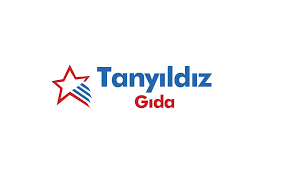

Kokteyl ve kahve şurupları, meyve püresi ile başladığımız üretim ağında bugün 85 çeşit şurup, 30 çeşit püre ile birlikte toplamda 185 çeşit ürün ile devam etmekteyiz. Ürünlerin üretim aşamasında alanında uzman gıda mühendisi ekibimizi AR-GE ekibimizin Türkiye’nin her bölgesinden bar içi görevli arkadaşlardan topladığı bilgilerle buluşturuyoruz. Yenilikçi tarzımız ile iş ortaklarımıza aradıkları her ürünü sunmak ile birlikte özgün ürünlerimiz ile bar içi görevli arkadaşların hayal güçlerini birleştirip alanımızda yepyeni bir dünya sunuyoruz.
